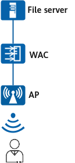

Example for Configuring APs to Report CSI Sensing Data to the Container
Networking Requirements
With CSI sensing technology, APs themselves can send and receive Wi-Fi signals to sense humans. With no need for additional hardware, deployment costs are greatly reduced. Users want to deploy the CSI sensing function and report CSI sensing data to the container on an AP.
Before configuring CSI sensing data reporting to the container, ensure that:
- The public key file, fingerprint file, and container file are available and have been uploaded to a file server.
- AP onboarding and STA access have been configured, and AP groups and profiles in the data plan have been created. The details are not mentioned here. This example assumes the AP ID of 1 and the AP group ap-group1.

Item |
Data |
|---|---|
AP group |
|
AP system profile |
|
File server address |
Server IP address: 192.168.1.100 Server user name: admin Server password: YsHsjx_202206 |
Container |
Public key file for installing the container: public-key2.txt Fingerprint file for installing the container: fingerprint.txt (Fingerprint information is in the TXT file and needs to be copied. For example, the copied content is 1652C1AA2AC09172521572E7F359D9A17DE5BFD5.) Container file name: oas.zip |
Configuration Roadmap
- Configure file server information for an AP.
- Import the public key of the container to the AP and install the container.
- Configure CSI sensing.
Procedure
- Configure file server information for the AP, including the IP address, user name, and password of the file server. SFTP is recommended because it is more secure than FTP.
<HUAWEI> system-view [HUAWEI] sysname WAC [WAC] wlan [WAC-wlan] ap file-transfer sftp-server ip-address 192.168.1.100 username admin password cipher YsHsjx_202206
- Import the public key of the container to the AP and install the container.
[WAC-wlan] install container public-key ap-group ap-group1 public-key public-key2.txt fingerprint 1652C1AA2AC09172521572E7F359D9A17DE5BFD5 // //public-key.txt is the name of the public key file. To use the fingerprint key, open the fingerprint file and copy its content. For example, the copied content is 1652C1AA2AC09172521572E7F359D9A17DE5BFD5. Info: Operating, please wait for a moment......done. [WAC-wlan] install container application-software ap-id 1 software-name oas.zip Info: Operating, please wait for a moment......done. [WAC-wlan] quit
- Configure CSI sensing.

The CSI sensing function takes effect after being configured in either the AP system profile view or AP view. If CSI sensing is configured in both views, the configuration in the AP view takes precedence over that in the AP system profile view. This example configures CSI sensing in the AP system profile view.
Verifying the Configuration
# Run the display container install status command to check the container installation progress.
[WAC] display container application-software install status all
Total: 1
--------------------------------------------------------------------------------------------------------------------------------
ID Name AP Type AP Group AP MAC FileName Last Update Time Update Status
--------------------------------------------------------------------------------------------------------------------------------
1 hw0 AirEngine5776-26 ap-group1 00e0-fc76-e320 oas.zip 2025-05-19/10:11:04 succeed
--------------------------------------------------------------------------------------------------------------------------------
# Check the CSI configuration in the AP system profile on the device.
[WAC] display ap-system-profile name ap-system ... CSI Switch : enable CSI distance sensitivity : 100 CSI action sensitivity level : high CSI presence enter range : 60 CSI presence leave range : 80 CSI motion detection threshold : 0 CSI presence aging time : 660 CSI presence re-enter delay : 0 CSI report to container : enable CSI report to server : disable CSI report to server address : - ...
Configuring Scripts
#
sysname WAC
#
wlan
ap file-transfer sftp-server ip-address 192.168.1.100 username admin password cipher %+%##!!!!!!!!!"!!!!"!!!!*!!!!7LTnVOK_g:0Z`Q0<h
[e9lbv(!D`|$WY%@K3!!!!!2jp5!!!!!!>!!!!1Vw0Evw/42{QA5~I'aAKcd-2PJ@,V<5!-y!z)e/&%+%#
ap-system-profile name ap-system
csi enable
csi report-to-container
csi distance-range presence-enter-range 60 presence-leave-range 80
csi presence-aging-time 660
csi presence-re-enter-delay 60
ap-group name ap-group1
ap-system-profile ap-system
#
return